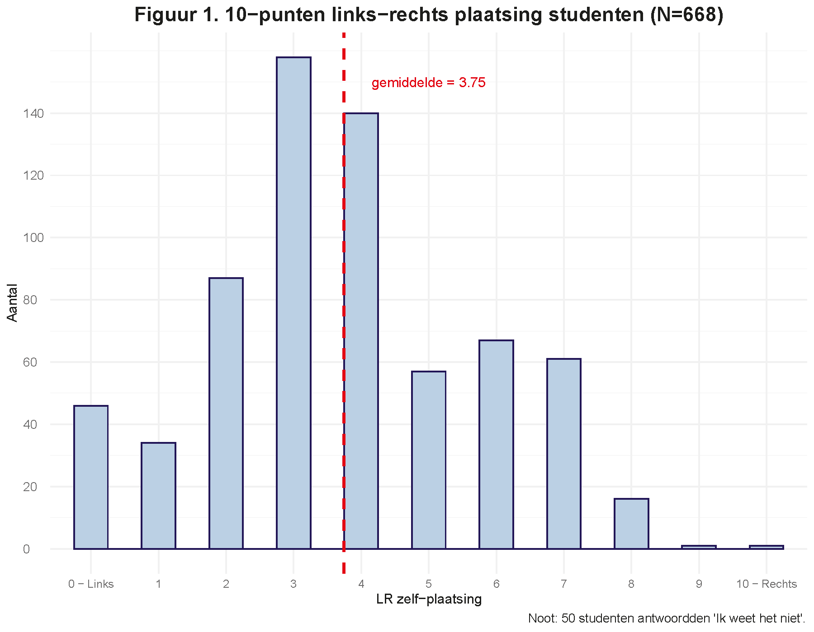
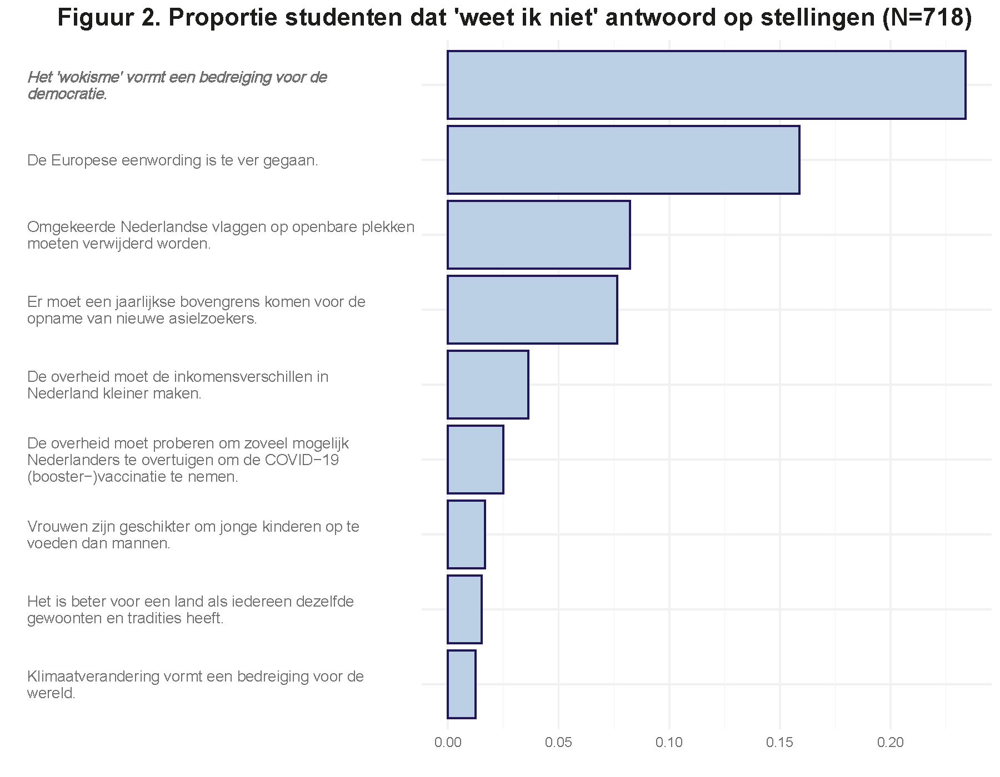
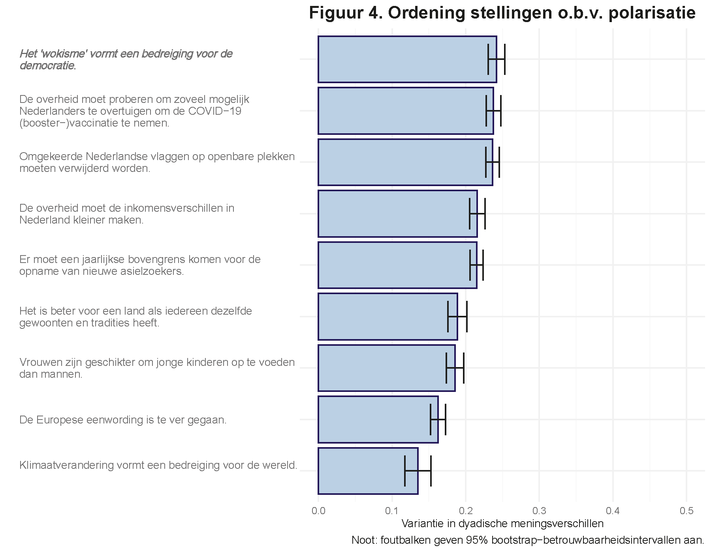

(Deze blogpost verscheen oorspronkelijk op StukRoodVlees)
Volgens minister Dilan Yesilgöz van Justitie en Veiligheid is het ‘wokisme’ een beweging die de democratische rechtsstaat bedreigt. Dit zei zij op 12 september tijdens de door haar uitgesproken HJ Schoo-lezing. Vrees niet, niet alle wakkeren onder ons die erkennen dat sociale ongelijkheid deels veroorzaakt wordt door discriminatie rekent de minister tot wokist. Het wokisme is namelijk volgens de minister een beweging van “Mensen die vinden dat zij mogen bepalen welke informatie of mening juist is en welke niet juist is. Of wat kwetsend en niet kwetsend is. Wie wel deugt en wie niet deugt. Die, onder het mom van inclusie, alleen maar bezig zijn met uitsluiten.”.
Het wokisme zou onder andere een enorme druk leggen op de academische vrijheid. Afgaande op de vele berichten in de media zou ‘woke’ inderdaad aan een flinke opmars bezig zijn op de universiteiten. Niet alleen onder bestuurders die ‘diversity officers’ aanstellen en genderquota invoeren om een einde te maken aan (vermeende) patriarchale machtsstructuren binnen universiteitsmuren. Maar juist ook onder studenten. ‘Woke-studenten’ zouden ‘dekolonisatie’ van het curriculum eisen, om racisme en seksisme te bestrijden. En er zou een behoefte zijn aan ‘safe spaces’, waar zij niet geconfronteerd worden met ‘bigots’. Hele disciplines zouden zich door wokisme laten gijzelen (zie de column van Elma Drayer).
U denkt wellicht: ‘Is woke echt zo’n problematische beweging?’ Dat vroegen wij en de minister ons ook af. Waar de minister volstaat met “Ja, wat mij betreft wel”, hielden wij een survey onder meer dan 700 studenten van de Radboud Universiteit en de HAN (zie Box 1 voor de onderzoeksverantwoording). Wat vinden studenten van het wokisme?
We erkennen meteen dat wij niet onderzocht hebben of studenten zelf wokist zijn en of zij hun docenten muilkorven. Wij wilden weten (1) of het thema studenten bezighoudt, (2) in hoeverre men het eens dan wel oneens is met de minister en (3) of het polariseert. Met polarisatie bedoelen wij dat er duidelijk twee groepen van voor- en tegenstanders onder de studenten te onderscheiden zijn. Het leek ons het beste om deze onderzoeksvragen vanuit een vergelijkend perspectief – of noem het desgewenst een inclusief perspectief – te benaderen. Wij hebben de studenten daarom meerdere politieke stellingen voorgelegd, naast het wokisme onder ander over de vluchtelingencrisis, de stikstofcrisis, en de EU (zie Box 1).
Box 1: onderzoeksverantwoording
Dataverzameling 718 studenten van de Radboud Universiteit (76%) en de Hogeschool van Arnhem en Nijmegen (24%) legden wij een online vragenlijst voor, die zij tussen 19 en 28 september 2022 invulden. We vroegen hen onder andere waar zij zichzelf zouden plaatsen op het politieke spectrum, op de links-rechts as. We vroegen ze in welke mate ze geïnteresseerd zijn in politieke onderwerpen (“niet”, “tamelijk” of “zeer” geïnteresseerd), en we legden ze een aantal stellingen voor over politieke thema’s, die zij konden beantwoorden met de antwoordcategorieën “Helemaal oneens”, “Mee eens”, “Neutraal”, “Mee oneens”, “Helemaal oneens”, en “Ik weet het niet”.
Stellingen
- De overheid moet de inkomensverschillen in Nederland kleiner maken.
- Het is beter voor een land als iedereen dezelfde gewoonten en tradities heeft.
- De Europese eenwording is te ver gegaan.
- Klimaatverandering vormt een bedreiging voor de wereld.
- Vrouwen zijn geschikter om jonge kinderen op te voeden dan mannen.
- Er moet een jaarlijkse bovengrens komen voor de opname van nieuwe asielzoekers.
- Omgekeerde Nederlandse vlaggen op openbare plekken moeten verwijderd worden.
- Het ‘wokisme’ vormt een bedreiging voor de democratie.
- De overheid moet proberen om zoveel mogelijk Nederlanders te overtuigen om de COVID-19 (booster-)vaccinatie te nemen.
Polarisatie
We definiëren polarisatie als de variantie in de meningsverschillen, \(d_{ij}\), tussen alle mogelijke studentenparen i en j. De wiskundige formule is:\(VAR(d_{ij}) = \frac{1}{N-1} \Sigma_{ij}(d_{ij}-\bar{d_{ij}})^2\).
Wat waren onze bevindingen? Laten we beginnen met een disclaimer. De ondervraagde studenten zijn vrij links. Als we hen vragen om zichzelf te plaatsen op een links-rechts schaal die loopt van 0 (uiterst links) naar 10 (uiterst rechts) plaatst slechts 22 procent zich rechts van het centrum. De gemiddelde score is 3.75 (zie Figuur 1). De gemiddelde Nederlander scoort op dezelfde schaal een 5 (bron: Jacobs et al., 2021). Het is daarmee zeker niet ondenkbaar dat de ondervraagde studenten het ‘wokisme’ minder vaak als gevaar voor de democratie zien dan een gemiddelde Nederlander.

Dat gezegd hebbende. Een groot deel van de ondervraagde studenten is niet geïnteresseerd in politieke onderwerpen (30 procent geeft aan niet geïnteresseerd te zijn, 54 procent tamelijk geïnteresseerd, en slechts 16 procent zeer geïnteresseerd). Hiermee zijn de ondervraagde studenten zelfs minder geïnteresseerd in politiek dan de gemiddelde Nederlander (26 procent van de representatieve NKO-steekproef is niet geïnteresseerd in politieke onderwerpen; bron: Jacobs et al., 2021). Ten tweede blijkt van alle stellingen juist de stelling over het wokisme het moeilijkste te beantwoorden voor studenten. 24 procent geeft aan het niet te weten (zie Figuur 2). Daarmee lijkt wokisme voor studenten nog vager te zijn dan Europa.

In Figuur 3 zien we hoeveel studenten het (on)eens zijn met de minister. Hoewel de minister het nogal stellig bracht, is toch 16% het met haar (helemaal) eens. Een aanzienlijk deel, zeker gezien de links-rechts plaatsing van de ondervraagde studenten. Daarentegen ziet 95% klimaatverandering als bedreiging voor de wereld. Houdingen ten aanzien van woke en wokisme zijn nog nooit goed in kaart gebracht, laat staan over een langere tijd. Er is dus nog geen hockeystick-grafiek die de groei van het wokisme illustreert. Zou het wokisme wel exponentieel (gaan) groeien, en zouden we ons daarvan bewust zijn, dan zouden wellicht meer studenten net zoals de minister in paniek zijn. Maar nu nog niet.
Sterker nog, een aanzienlijk deel van de studenten is het helemaal oneens met de minister. Betekent dit volgens de studenten dat meer woke goed is voor de democratie? Of dat docenten volgens studenten nog eens beter moeten kijken of zij ook auteurs in de literatuurlijst hebben opgenomen die tot een minderheidsgroep behoren? Dit vraagt om meer onderzoek. Wel laat dit zien dat de minister zowel een flinke groep mede- als tegenstanders heeft.
Dit brengt ons tot de laatste onderzoeksvraag ten aanzien van polarisatie. In Figuur 4 ordenen we de verschillende stellingen op basis van de mate van polarisatie. Wat blijkt, studenten zijn het meest gepolariseerd over de stellingen over het wokisme, vaccinatie en de boerenprotesten. Het is geen vreemde aanname dat ook de algemene bevolking gepolariseerd is over woke en wokisme. Althans, meer dan over veel ander politieke onderwerpen (klimaatverandering, inkomensongelijkheid, migratie). Dit verklaart mogelijk niet alleen de felheid van het debat, maar ook dat de media en de minister er zo veel aandacht aan besteden.

Wat kunnen we nu concluderen? Volgens de minister is de woke-beweging een gevaar voor de democratie. De overgrote meerderheid van de ondervraagde studenten deelt deze mening van de minister niet. Wel is duidelijk dat er sprake is van beginnende polarisatie. Dat kan een bedreiging voor de democratie gaan vormen. Immers, tegenpolen luisteren niet meer naar elkaar. Echter, de politieke polarisatie onder studenten is gelukkig nog verre van maximaal. De meeste studenten nemen geen extreem standpunt in. Dit betekent dat we nu nog in debat kunnen met elkaar. Laten we, de maatschappij in het algemeen en docenten en studenten in het bijzonder, dat dan ook doen.
Tot slot, een groot deel van de studenten is helemaal niet geïnteresseerd in politiek. Zo gezien is het ook niet vreemd dat studenten vaak helemaal geen mening hebben over politieke stellingen. Dat lijkt ons nu een reëel gevaar voor de democratie.
Referentie
Jacobs, K., Lubbers, M., Sipma, T., Spierings, N. en T.W.G Van der Meer (2021). DUTCH PARLIAMENTARY ELECTION STUDY 2021 (DPES/NKO 2021). DANS. https://doi.org/10.17026/dans-xcy-ac9q